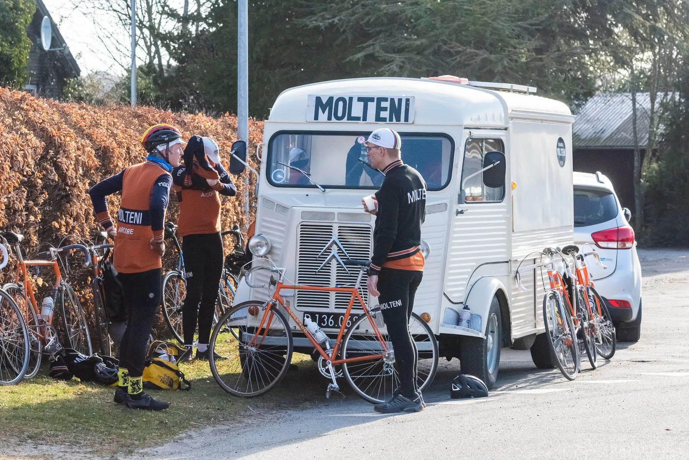
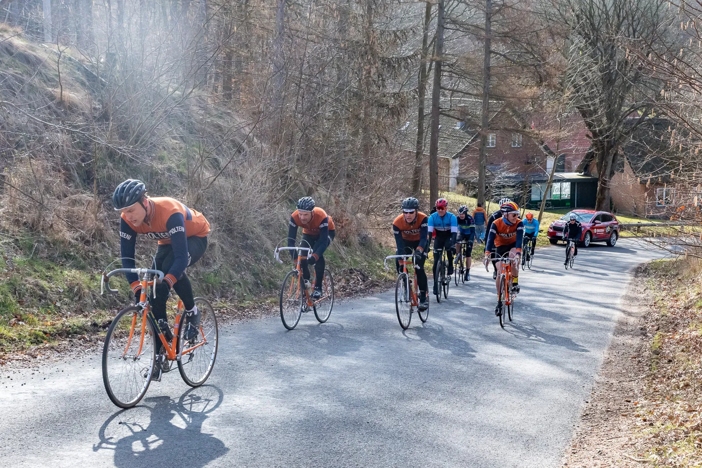
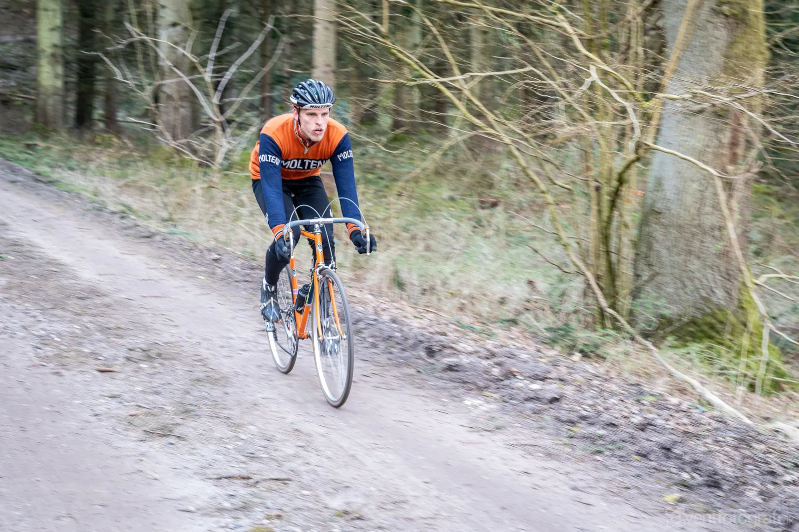
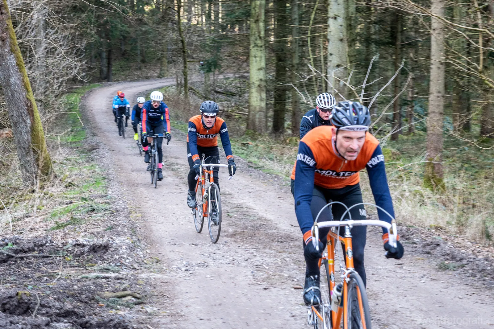
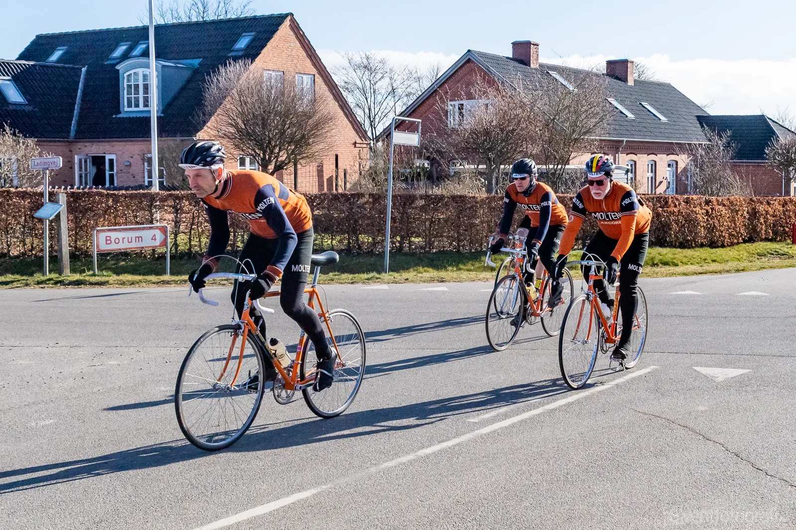
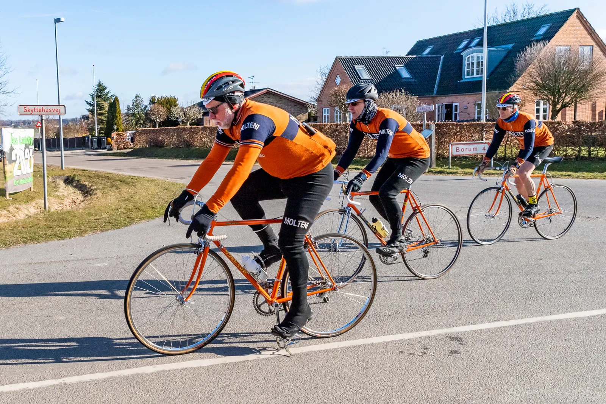
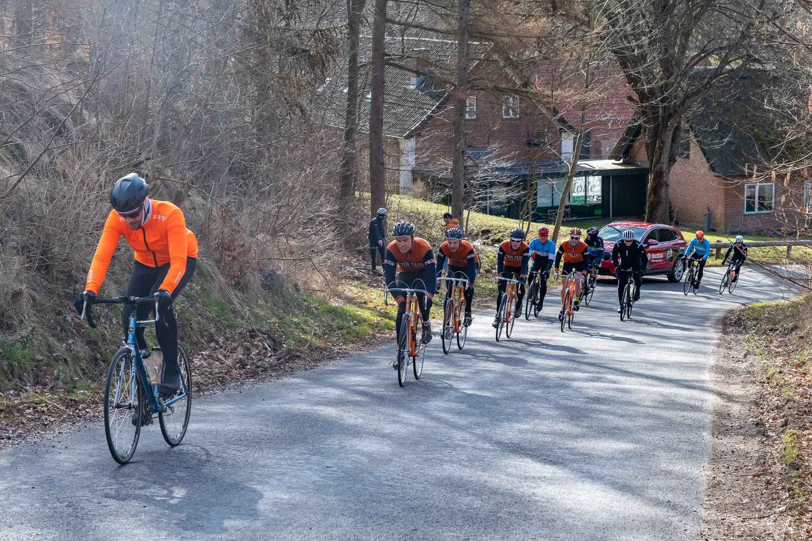

Ronde van Borum: Sejr til Eigil van Leegaard – og Thimers parløb med Johan Museeuw

Endnu engang blev det til total Squadra Molteni dominans i Ronde van Borums stålklasse: Eigil van Leegaard vinder foran Jeppe Thiemer og Lars Munch.
Taktikken blev lagt over en kop kaffe i den lune oliefyropvarmede HY-holdbus: Squadra Molteni skulle lægge moderat ud, og først sætte tryk på ved den første pavé – hvor en stor del at carbonrytterne alligevel ville stå med punkterede eller defekte højprofilfælge.


Styrt, tosset Tour de France Skoda og Thimers morgenudbrud
Første forhindring bestod af Pøt Mølle. Først den lynhurtige nedkørsel, hvor en carbonist havde valgt at køre i grøften – og efterfølgende valgte Ronde van Borums løbsledelsen at parkere den lånte røde Tour de France Skoda stort set samme sted: i et sving i bunden af nedkørslen. Denne lidt tossede manøvre medførte heldigvis ikke flere styrt. Squadra Moltenis Jens Langergaard måtte dog bruge næste halvdelen af sine Campagnolo bremsekoldser, for ikke at torpedere med Skodaen.


Ikke langt efter Pøt Mølle ramte feltet første pavé: Oude Voer Mølle. Ikke langt inde, og resten af den 4,5 km pavé, stod carbonisterne i vejkanten, som perler på en snor, med defekte cykler. Jeppe Thiemer smed allerede et par hundrede meter inde på pavéen kæden i 53-12 – og væk var han! Jeppe elsker gruspaveerne – og specielt de ekstra lange og vindblæste paver nordvest for Århus.


Kaptajn Bjørnsteen og Eigil van Leegaard fulgte efter Thiemer, som de hele tiden havde inden for et minut. Kaptajnen var stærk og trak Leegaard på paveerne. Omvendt var det på de bakkede asfaltstykker. Lidt længere bagude havde Lars Munch, Jens Langergaard, Grane Maaløe og Svend Seegert styr på hovedfeltet.


Museeuw på bagsmækken
I slutningen af den indledende lange runde på godt 60 km ser Bjørnsteen og van Leegaard, at Jeppe Thiemer længere fremme har fået følgeskab. Han har nu fået en rytter på bagsmækken. Og det er ikke hvilken som helt rytter…
– Jeg opdager pludselig, at jeg har en rytter på hjul. Det er Johan Museeuw. Han puster lidt rigeligt – og han vil ikke rigtig tage del i føringsarbejdet, fortæller Jeppe, der dog satte Museeuw på målbakken inden de sidste 5 runder á 7 km skulle køres.
Drama i finalen
Da Bjørnsteen og van Leegaard rammer de korte runder, sætter van Leegaard farten op. Bjørnsteen valgte derefter at stå af ved holdbussen, for sammen med Grane Maaløe og Svend Seegert at få tændt oliefyret og sat kaffe over.
De bakkede omgange er lige Eigil van Leegards metier – og kort efter indhenter han Jeppe Thiemer, og de to indleder et samarbejde. Men på sidste omgang bliver Thiemer sat på en led dobbeltbakke. Van Leegaard sætter farten yderligere op, men i et skarpt sving, hvor en lokal regnbyge i kombination med nyudkørt gylle har gjort svinget ekstra glat, ryger van Leegard i asfalten. Eigil komme dog hurtigt på cyklen igen, men i mellemtiden er Thiemer kommet op – og der er nu kun målbakken tilbage: Det er her slaget skal slåes. På målbakken viser Eigil van Leegaard dog, at han er Squadra Moltenis bjergkonge.
Thiemer kommer ind på 2. pladsen 30 meter efter – og lidt efter kan Lars Munch snuppe den sidste podieplads.
Retro Ronde van Borum 2023
Der går nu rygter om, at Ronde van Borum næste år vil blive med et specielt retro-gentelmanløb. Løbsdirektør Uggi Kaldan kan bekræfte, at der er ved at blive lagt planer for et Retro Ronde van Borum 2023.






Foto: Eventfotografi.dk